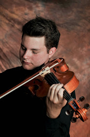

Dan Fellows has served in both section and title positions of various professional orchestras in the USA,
including the orchestras of Cheyenne, Tulsa, Arkansas, Santa Barbara, Pasadena, and the New World Symphony in Miami Beach. Currently, he
is pursuing a certificate in full stack web development from University of California at Berkeley Extension. As a soloist, Dan has
performed concerti with the orchestras of Bartlesville, OK and Grand Junction, CO. He has also
participated in numerous state, regional, national, and international competitions. In 2016, he
participated in the Schoenfeld International String Competition as a member of the Los Angeles
Ensemble, which received 4th place in the finals. In the past, Dan has been an alternate for the American
String Teachers Association National Solo Competition, and has participated as a national finalist in the
Music Teachers National Association Young Artist Performance Competition. Dan’s previous
instructors are Esther Fellows, Michael Nicholson, and Peter Slowik. He received his Bachelor of Music
degree from the University of Colorado at Boulder as a student of Erika Eckert and Geraldine Walther.
Dan completed his Master of Music degree at the University of Southern California, where he studied
with Michael Tree and Karen Dreyfus. In his spare time, Dan enjoys reading on various subjects both
related to music, whether it is a biography of a composer or other influential musician, and other
subjects, including history and psychology. He also greatly enjoys spending time in the kitchen learning
new dishes.